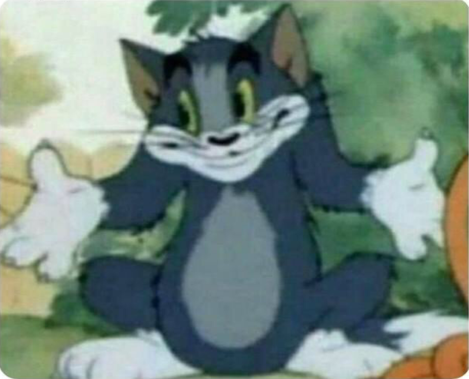
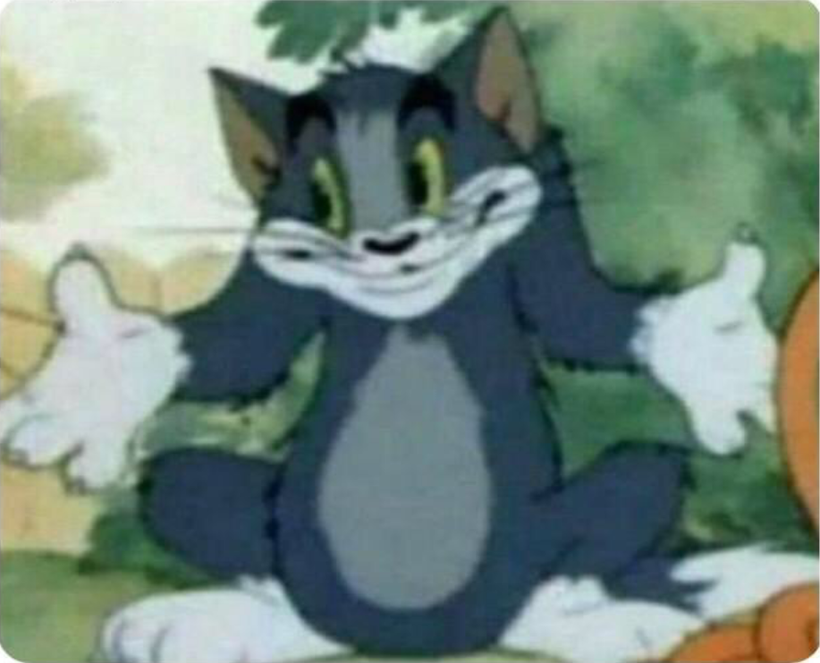
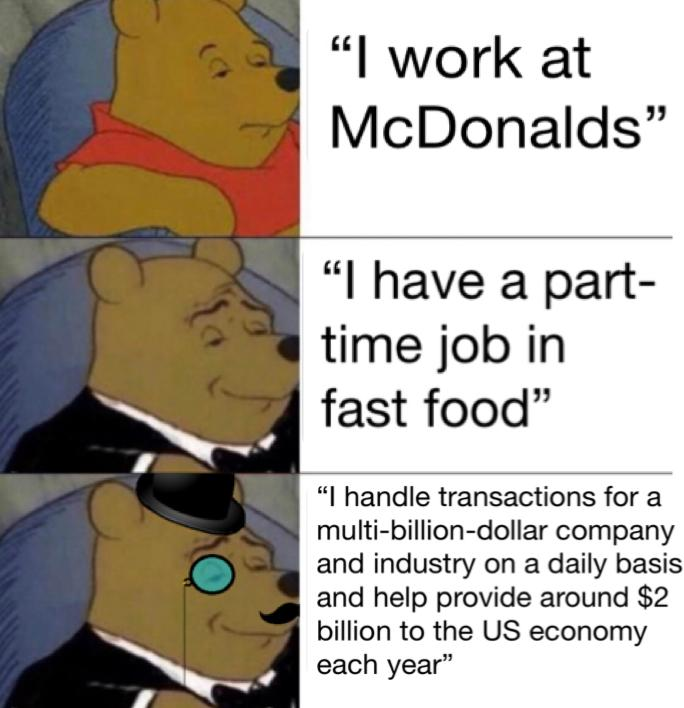
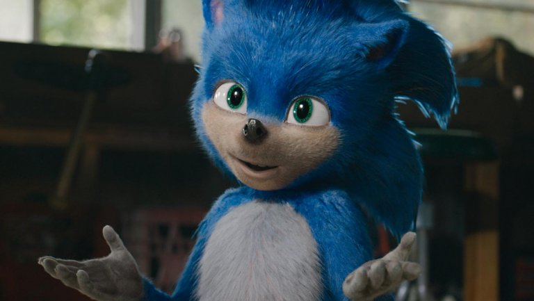
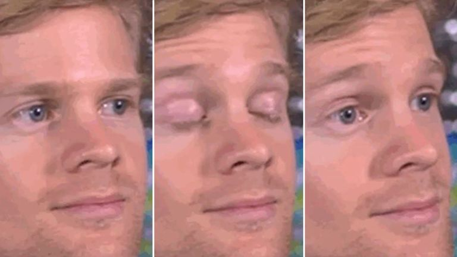
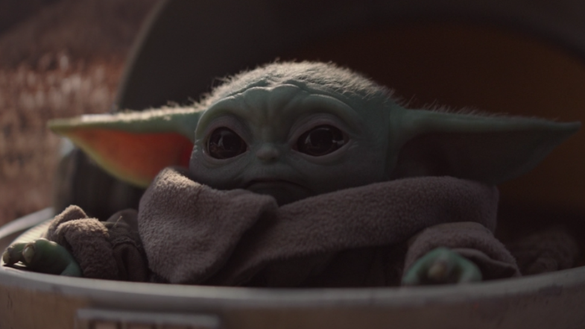

Tom Meme
Unsettled Tom, also known as Traumatized Tom and Concerned Tom, refers to a Paint drawing of character Tom from cartoon series Tom and Jerry wearing an expression of concern. Originating from a Tails Gets Trolled comic and circulated as a reaction image on 4chan, in March 2019 the picture gained popularity on Reddit, often used in reference to shocking behavior. It can also talked about the shrugging tom meme, that appeared later in the course of the year but was still trendy.
 
Unsettled Tom
Shrugging Tom
Winnie the pooh Meme
Tuxedo Winnie the Pooh, also known as "A Fellow Man of Culture" refers to a photoshopped image of character Winnie the Pooh sitting in an armchair. Initially circulated as a reaction image on 4chan, in March 2019 the image gained mainstream popularity on Reddit. It can also refer to the joke about the leader of China looking like the fictional character.
Sonic Meme
Sonic the Hedgehog (2020 Film) refers to the live-action film adaptation of Sonic the Hedgehog. The film is directed by Jeff Fowler and stars Ben Schwartz, James Marsden, Tika Sumpter, and Jim Carrey. The meme originated from the terrible design of the main character.
Blinking White Guy Meme
Blinking White Guy, also known as Drew Scanlon Reaction, is a GIF of Drew Scanlon, video editor and podcaster at video game website Giant Bomb. The GIF of Scanlon is used as a reaction image to express incredulity. In August 2019, a multi-panel format based on the GIF known as First Guy To gained popularity.
Baby Yoda Meme
Baby Yoda is an unnamed character introduced on the Disney+ television series The Mandalorian that resembles an infant version of the Star Wars character Yoda. It is the most recent meme as of right now and it is very popular.
